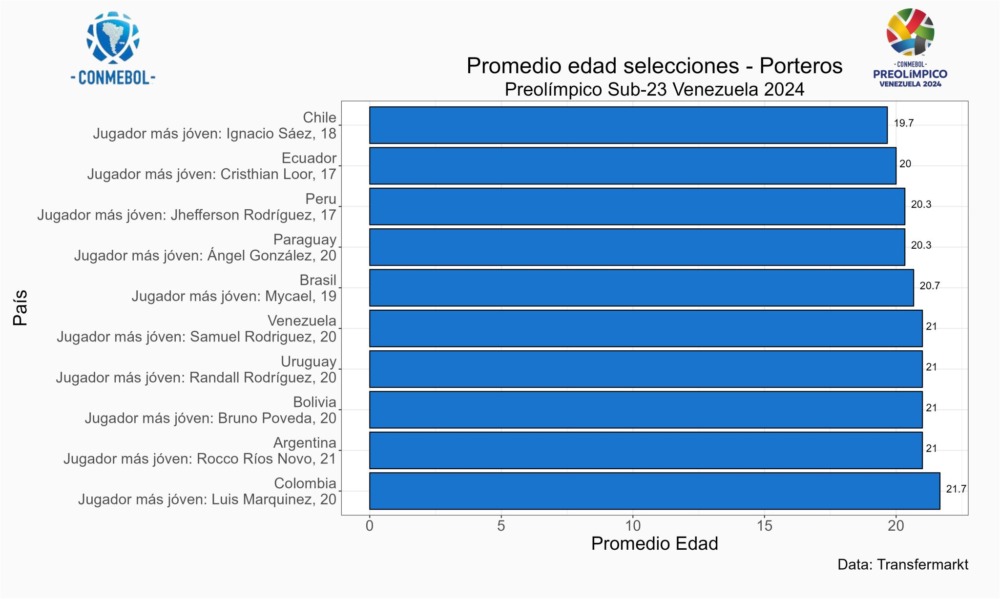
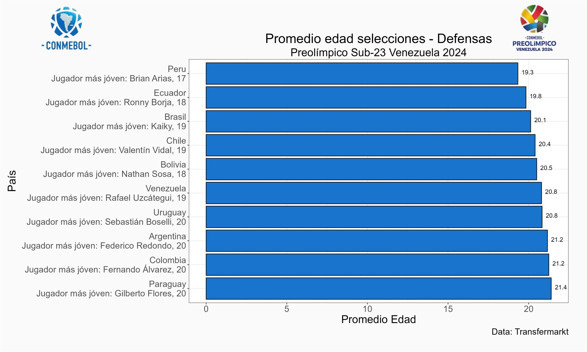
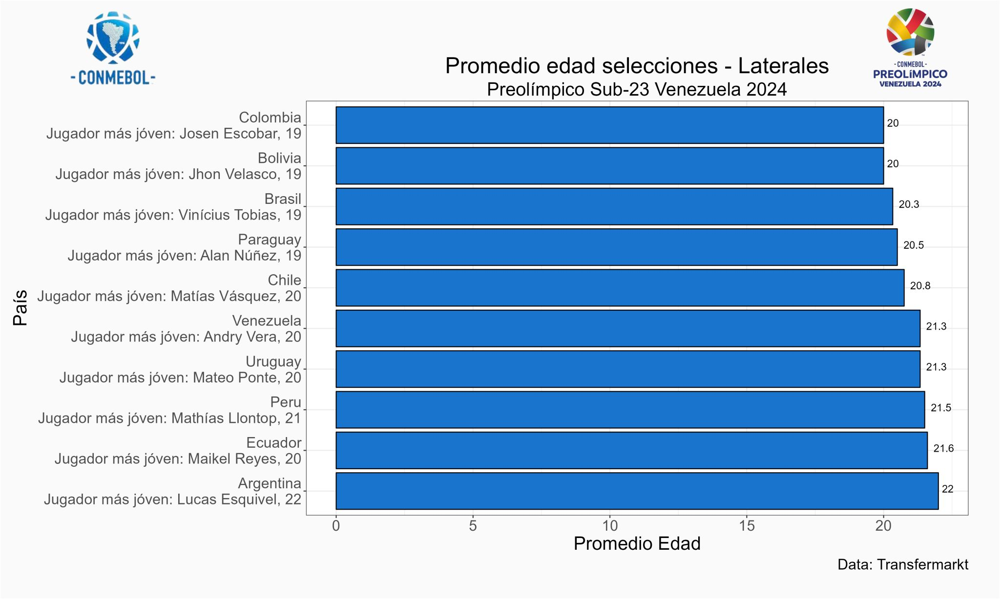
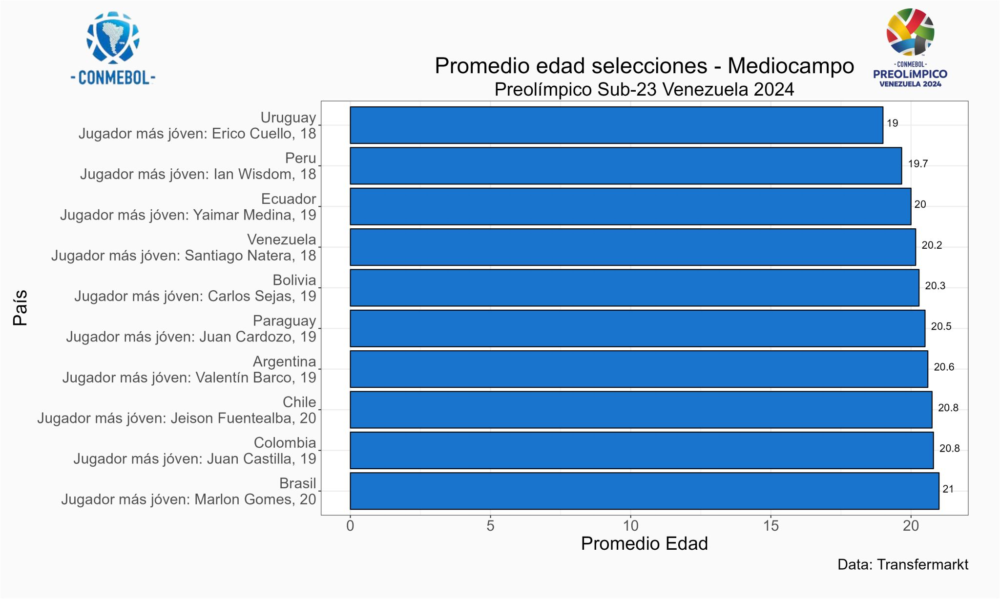
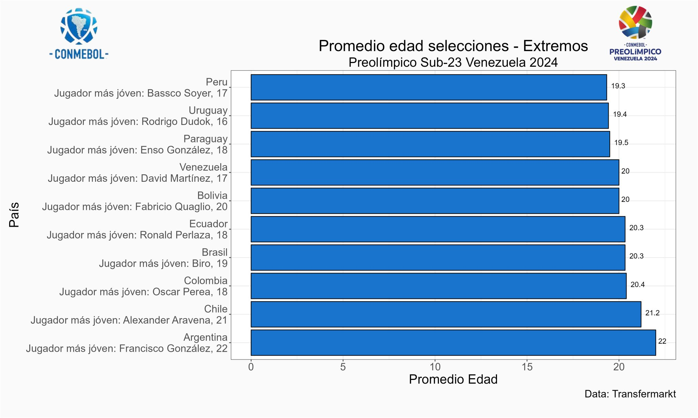

El Preolímpico Venezuela 2024 ⚽ es una excelente oportunidad para ver el desempeño de jugadores jóvenes de Sudamérica, el promedio de edad de este torneo se ubica en los 20.44 años.
A continuación se presenta un análisis de la edad según cada posición,
💡 El arquero más joven lo tiene la selección de Chile, su nombre es Ignacio Sáez, cuenta con 18 años y juega para las inferiores de la Universidad de Chile.
💡 El defensa más jóven es el peruano Brian Arias, cuenta 17 años y juega para las inferiores del Alianza Lima.
💡 El lateral derecho más joven es Josen Escobar, cuenta 19 años y juega para el CD América de Cali.
💡 El lateral izquierdo más joven es Jhon Velasco, cuenta 19 años y juega para el Club Deportivo Guabirá.
💡 El mediocampista más joven es Erico Cuello de 18 años, juega para el Defensor Sporting Club B.
💡 El extremo más joven es Bassco Soyer de 17 años, juega para las inferiores del Alianza Lima.

💡 El delantero más joven del torneo es Victor Guzman de Perú cuenta con 17 años y juega para las inferiores del Alianza Lima.
🔎 En el torneo participarán 9 jugadores menores de 18 años, 4 juegan para la selección de Perú, 2 para Ecuador, y los 3 restantes para Brasil, Uruguay y Venezuela.